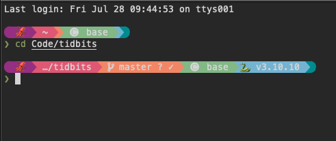
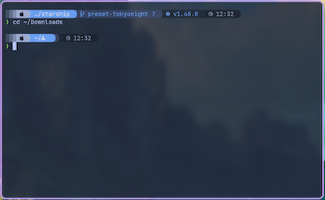

- Fri 28 July 2023
- Misc
- Marius Mather
- #shell, #terminal, #bash
As part of my continuing quest to make my terminal more colourful, I've starting using Starship. Starship gives you a colourful, customisable prompt, with lots of useful information about your current programming environment, git branch, or shell built in.

Installation
The best way to install Starship is to follow the official instructions - usually there's a single terminal command to install, plus another to set it up for your specific shell.
You'll need a "nerd font" that has some extra symbols in it - find lots of options here.
Configuration
Starship is configured through a configuration file at ~/.config/starship.toml.
To get started, you can try one of the nice looking presets like Tokyo Night,
which can be set up automatically with a single command:
starship preset tokyo-night -o ~/.config/starship.toml

See Starship's documentation for information about how to tweak the prompt for specific languages and tools.